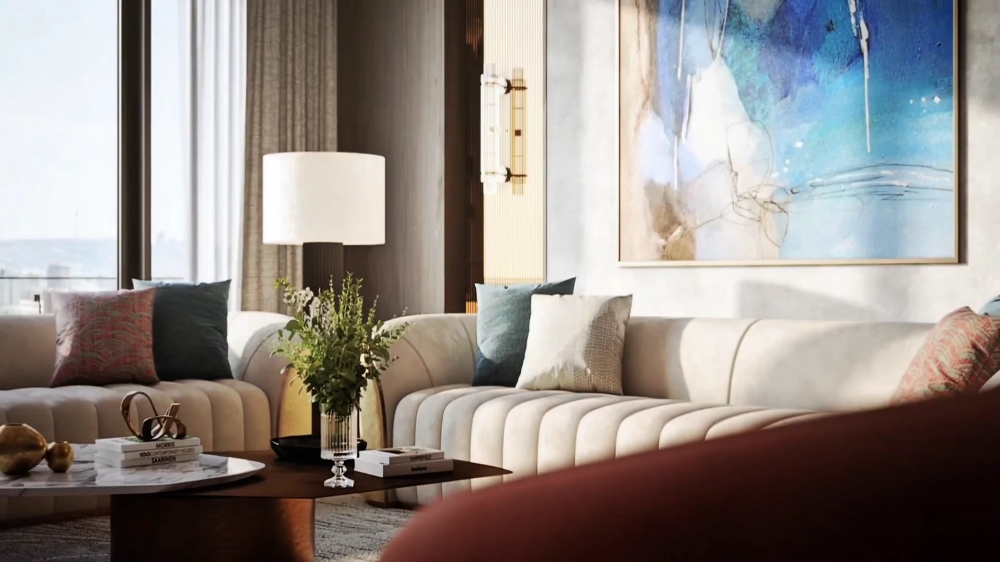
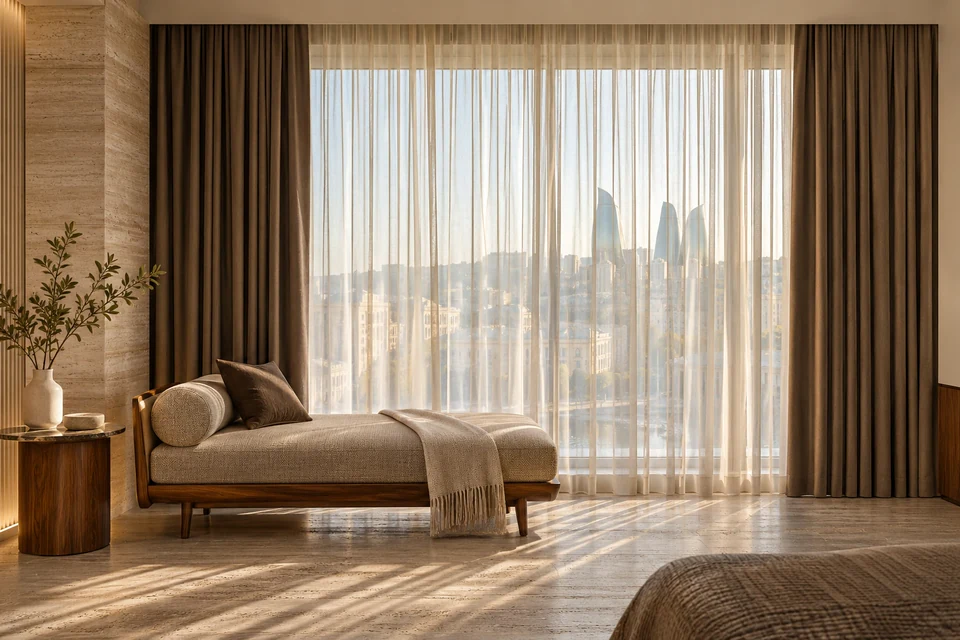
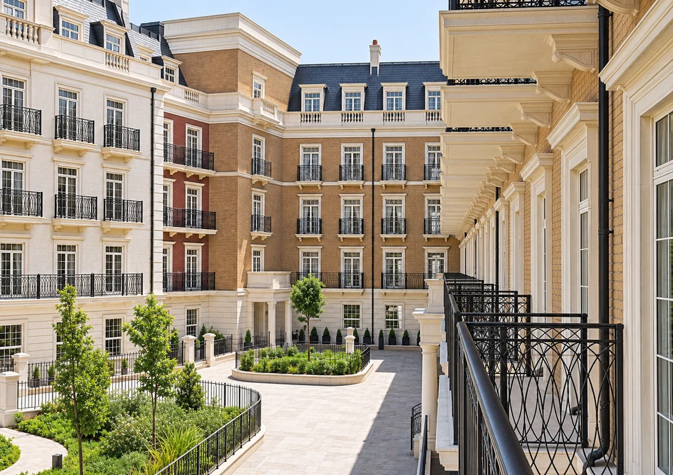
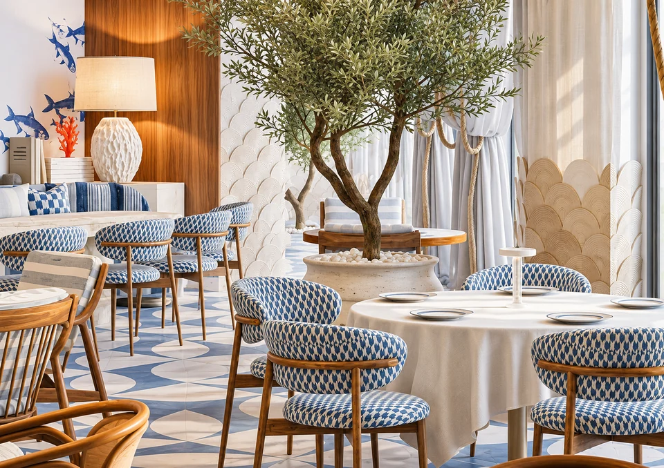
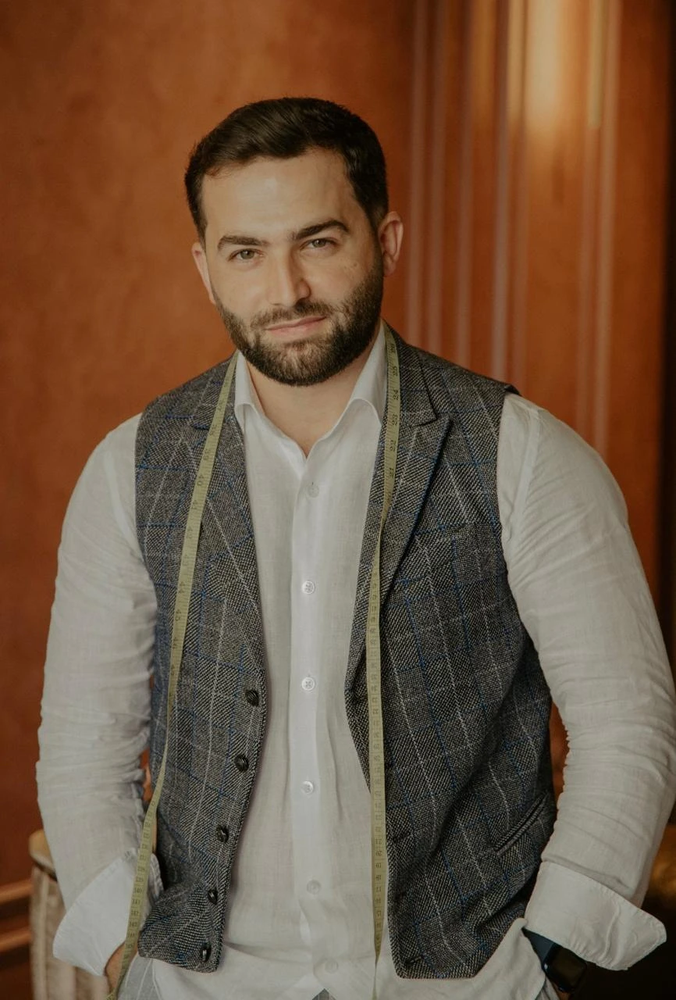

Sarvagelli kimdir?
1979-cu ildən yaşayış məkanları, hotellər və ictimai interyerlər üçün pərdə, jalüz və tekstil həlləri hazırlayırıq.
Parçanı məkanın işığına və istifadə tərzinə görə seçirik. Ölçü, fərdi tikiliş və quraşdırmanı öz komandamızla aparırıq.
Haqqımızda
Layihələrimiz
Bütün layihələr
Marriott Hotel Boulevard
Layihəyə bax
Sarvagelli · 1979-dan
Pərdədən əvvəl işığı düşünürük
Gün işığının istiqaməti, pəncərənin ölçüsü və məxfilik tələbi pərdə qatını, parçanı və relsin yerini müəyyənləşdirir.
Sarvagelli haqqında
Fərdi tikiliş
Parça nümunəsindən quraşdırmaya
Parçanın rəngini və toxumasını yerində yoxlayırıq. Ölçü dəqiqləşəndən sonra pərdəni tikir, relsin və motorun uyğunluğunu yoxlayırıq.
Komandamız
Sea Breeze Grand Hotel
Layihəyə bax

The Ritz-Carlton Hotel
Layihəyə bax
Knightsbridge Residence White City
Layihəyə bax
Port Baku Walk
Layihəyə baxMəhsul istiqamətləri
- Pərdələr
- Jalüzlər
- Karnizlər
- Motor sistemləri
- Mebel parçaları və dərilər
- Akustik tekstil
- Hotel tekstili
- Dizayn parçaları
- Açıq məkan tekstili
- ZIP sistemləri
Tül, dekorativ və blackout pərdələr işığı və məxfiliyi tənzimləyir. Parçanı və qat formasını pəncərənin ölçüsünə uyğun seçirik.
Ətraflı bax

Komandamız
